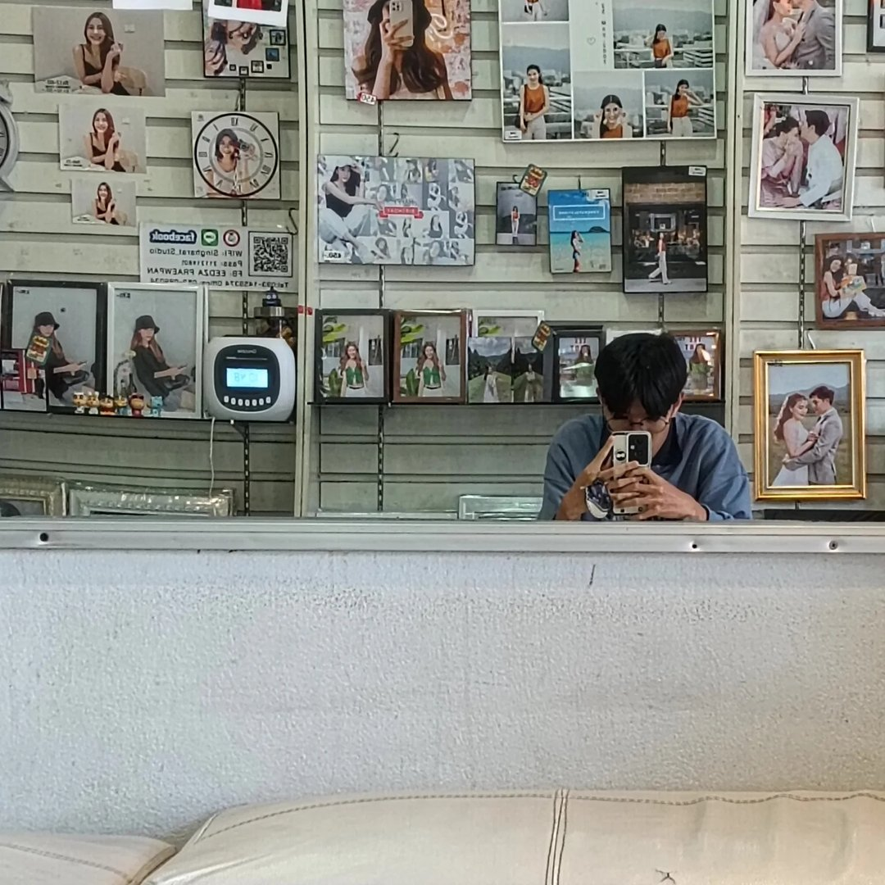
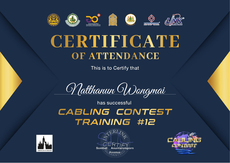
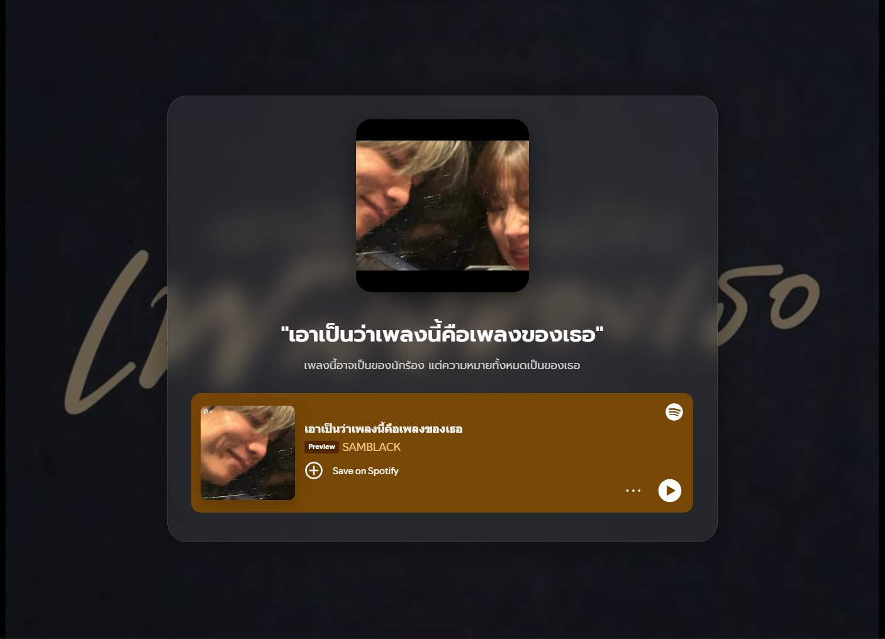

อายุครบ 18 ปีแล้ว!
🎈 🎊 🎁

HTML, CSS, JavaScript, Responsive Design
PHP, Python (MicroPython), Node.js (Express)
Git, GitHub, VS Code, Figma (พื้นฐาน)
ไทย (Native) · อังกฤษ (สื่อสารได้)
ผ่านการคัดเลือกตัวแทนเข้าแข่งขันระดับประเทศ ณ กรุงเทพฯ
เข้าร่วมการแข่งขันพัฒนาซอฟต์แวร์รอบชิงชนะเลิศ

การประยุกต์ใช้ปัญญาประดิษฐ์ในการแก้ปัญหา

เป็นการลองสร้างเว็บเล่นเพลง ที่นำ Link Spotify มาใช้งานและเชื่อมต่อกับ API
โปรเจกต์และไอเดียใหม่ๆ กำลังจะมาเร็วๆ นี้